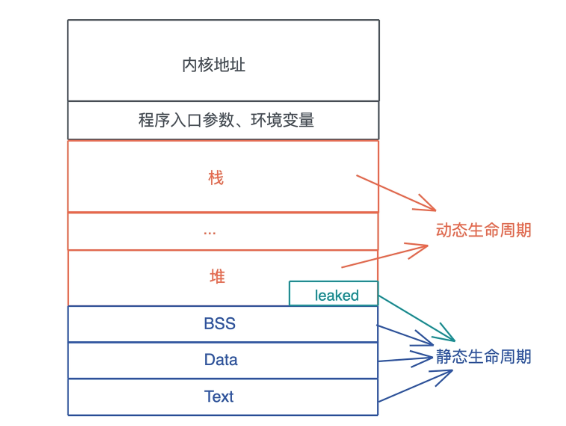

内存模型
类型的布局是其大小 (size) 、对齐方式 (align) 及其字段的相对偏移量. 对于枚举, 如何布局和解释判别式也是类型布局的一部分. 对于 Sized 的数据类型, 可以在编译时知道内存布局, 可以通过 size_of 和 align_of 获得其 size 和 align.
The layout of a type is its size, alignment, and the relative offsets of its fields.
For enums, how the discriminant is laid out and interpreted is also part of type layout.
Type layout can be changed with each compilation.
Note: 本文内存模型不考虑优化,是广文上的模型,实际中 Rust会对一些数据类型做优化.
1. 整型
| Type | size(bytes) | align(bytes) |
|---|---|---|
u8 | 1 | 1 |
i8 | 1 | 1 |
u16 | 2 | 2 |
i16 | 2 | 2 |
u32 | 4 | 4 |
i32 | 4 | 4 |
i64 | 8 | 8 |
u64 | 8 | 8 |
i128 | 16 | 16 |
u128 | 16 | 16 |
2. 浮点型
The IEEE 754-2008 "binary32" and "binary64" floating-point types are f32 and f64, respectively.
| Type | size(bytes) | align(bytes) |
|---|---|---|
f32 | 4 | 4 |
f64 | 8 | 8 |
3. usized & isized
| Type | size(bytes)/ 32位系统 | size(bytes)/ 64位系统 |
|---|---|---|
usize | 4 | 8 |
isize | 4 | 8 |
4. str
4.1 char 类型
char表示：一个 32 位(4 Bytes)长度字符, Unicode 标量值 Unicode Scalar Value 范围为 0x0000 - 0xD7FF 或者是 0xE000 - 0x10FFFF.
4.2 str 类型
str 与 [u8] 一样表示一个 u8 的 slice. Rust 中标准库中对 str 有个假设：符合 UTF-8 编码. 内存布局与 [u8] 相同.
5. & 和&[T] 引用
5.1 &
#![allow(unused)] fn main() { let a: i32 = 25; let b: &i32 = &a; let c: &&i32 = &b; stack | a | | b | │ c │ +––––+––––+––––+––––+––––+ │ 25 │ │ * │ │ * │ +––^–+––––+–│^–+––––+–│––+ │ │|________| │________│ }
5.2 &[T] slice 引用
slice 的使用必须要通过指针, &[T] 是一个胖指针, 保存指向数据的地址和元素个数. slice 的内存布局与其指向的 array 部分相同.
#![allow(unused)] fn main() { // array &[T] let a:[i32;3] = [55,66,77]; let b:&[i32] = &a[..2] stack [–––– a ––––| |––– b ––| +––––+––––+––––+–––+––––+––––+ │ 55 │ 66 │ 77 │ | * | 2 | +––––+––––+––––+–––+––––+––––+ | | / / –––––––––––<––––––––/ / / length buffer point }
#![allow(unused)] fn main() { // Vec<T> &[T] let a:Vec<i32> = vec![55,66,77]; let b:&[i32] = &a[..2] stack [––– a ––| |––– b ––| +–––+–––+–––+ +––––+––––+ │ • │ 3 │ 4 │ | * | 2 | +–│–+–––+–––+ +–│––+––––+ │ │ heap │ │ +–V––+––––+––––+ │ │ 55 │ 66 │ 77 │ │ +––––+––––+––––+ │ | │ │ –––––––––––<––––––––/ }
6. &str,str 和 String 的区别
6.1 String
#![allow(unused)] fn main() { String: let s: String = String::from("hello"); buffer point / capacity / / length stack / / / +–––+–––+–––+ │ • │ 8 │ 5 │ +–│–+–––+–––+ │ heap │ +–V–+–––+–––+–––+–––+–––+–––+–––+ │ h │ e │ l │ l │ o │ │ │ │ +–––+–––+–––+–––+–––+–––+–––+–––+ [––––––– length ––––] [–-–––––––– capacity –––––––––––] }
6.2 str和&str
#![allow(unused)] fn main() { &str: let s: &str = "hello"; buffer point / length stack / / +–––+–––+ │ • │ 5 │ &str +–│–+–––+ │ read-only │ memory │ [–│–––––– str ––––––] +–V–+–––+–––+–––+–––+ │ h │ e │ l │ l │ o │ +–––+–––+–––+–––+–––+ }
7. tuple
#![allow(unused)] fn main() { let a: (char, u8, i32) = ('a', 7, 356) stack [–––––––––––––– 12 Bytes –––––––––––––––––––| +–––––––––––––+–––––+–––––––––+–––––––––––––+ │ 'a' │ 7 │ padding │ 356 │ +–––––––––––––+–––––+–––––––––+–––––––––––––+ |–– 4 Bytes ––| 4 Bytes |–– 4 Bytes ––| }
8. struct
结构体是带命名的复合类型, rust有三种结构体类型: struct, StructExprStruct,StructExprUnit
8.1 struct 含有字段的结构体
#![allow(unused)] fn main() { struct Data { nums: Vec<u8>, a: u8, } stack [––– nums ––|– a –] +–––+–––+–––+–––––+ │ • │ 8 │ 5 │ 10 | +–│–+–––+–––+–––––+ │ heap │ +–V–+–––+–––+–––+–––+–––+–––+–––+ │ 0 │ 0 │ 0 │ 0 │ 0 │ │ │ │ +–––+–––+–––+–––+–––+–––+–––+–––+ }
8.2 StructExprTuple 元组结构体
#![allow(unused)] fn main() { struct Data(i32, i32, i32); stack [––– Data ––| +–––+–––+–––+ │ 1 │ 2 │ 3 │ +–––+–––+–––+ }
8.3 StructExprUnit 单元结构体
单元结构体没有任何数据,所以Rust编译器甚至不会为它分配任何内存.
#![allow(unused)] fn main() { struct Data; }
9. enum
9.1 C风格枚举
#![allow(unused)] fn main() { // 占一个字节 enum HTTPStatus { Ok; NotFound, } HTTPStatus::Ok stack +–––+ │ 0 │ +–––+ HTTPStatus::NotFound stack +–––+ │ 1 │ +–––+ }
9.2 C风格指定值枚举
#![allow(unused)] fn main() { // 占两个字节 enum HTTPStatus { Ok = 200; NotFound = 404, } HTTPStatus::Ok stack +–––––+ │ 200 │ +–––––+ HTTPStatus::NotFound stack +–––––+ │ 404 │ +–––––+ }
9.3 变体枚举
#![allow(unused)] fn main() { enum Data { Empty; Number(i32), Array(Vec<i32>), } stack Data::Empty +–––––+––––––––––––––––––––––––––––––––––––––––––––––+ │ 0 │ padding │ +–––––+––––––––––––––––––––––––––––––––––––––––––––––+ | mark| Data::Number +–––––+–––––––––+–––––––––––+––––––––––––––––––––––––+ │ 1 │ padding │ 0 │ padding │ +–––––+–––––––––+–––––––––––+––––––––––––––––––––––––+ | mark| |–– i32 –––| |–– value ––| Data::Array(Vec<i32>) [––––––––––––––––––––– 32 Bytes –––––––––––––––––––––| +–––––+–––––––––+–––––––––––+––––––––––––+–––––––––––+ │ 2 │ padding │ none │ 0 │ 0 │ +–––––+–––––––––+–––––––––––+––––––––––––+–––––––––––+ | mark| |––––––––––––– Vec<i32> ––––––––––––| |– pointer –|– capacity –|– length –| –––––––––––––––––––––––––––––––––––––––––––––––––––––––––––––––––––––––––––––––– enum Data { Empty; Number(i32), Array(Box<Vec<i32>>), } stack Data::Empty +–––––+–––––––––––––––––––––+ │ 0 │ padding │ +–––––+–––––––––––––––––––––+ | mark| Data::Number +–––––+–––––––––+–––––––––––+ │ 1 │ padding │ 0 │ +–––––+–––––––––+–––––––––––+ | mark| |–– i32 –––| |–– value ––| Data::Array(Vec<i32>) [––––––– 16 Bytes ––––––––––| +–––––+–––––––––+–––––––––––+ │ 2 │ padding │ * │ +–––––+–––––––––+––│––––––––+ | mark| |– │ Box<T>–| |– │ pointer| │ heap V +–––––––––––+––––––––––––+–––––––––––+ │ none │ 0 │ 0 │ +–––––––––––+––––––––––––+–––––––––––+ }
9.4 Option<T>
#![allow(unused)] fn main() { Option<Box<i32>> None +–––––+–––––––––––––––––––––+ │ 0 │ padding │ +–––––+–––––––––––––––––––––+ | mark| Some(Box<i32>) +–––––+–––––––––+–––––––––––+ │ 1 │ padding │ * │ +–––––+–––––––––+–––––––––––+ +–––––+–––––––––+––│––––––––+ | mark| |– │ Box<T>–| |– │ pointer| │ heap V +–––––––––––+ │ 0 │ +–––––––––––+ // 因为智能指针的值都不允许为0, 所以实际上上面会进行优化成下面的方式 None +–––––––––––+ │ 0 │ +–––––––––––+ | mark| Some(Box<i32>) +–––––––––––+ │ * │ +–––––––––––+ +––│––––––––+ |– │ Box<T>–| |– │ pointer| │ heap V +–––––––––––+ │ 0 │ +–––––––––––+ }
10. array,[T]和Vec<T>
10.1 array
#![allow(unused)] fn main() { let a:[i32;3] = [55,66,77]; stack [–––– a ––––| +––––+––––+––––+ │ 55 │ 66 │ 77 │ +––––+––––+––––+ }
10.2 [T]
[T]即slice 是DST 类型, 是类型 T 序列的一种视图. 所以它只能使用&[T]宽指针进行引用,参考[&[T] 引用](# 5. & 和&[T] 引用)
10.3 Vec<T>
#![allow(unused)] fn main() { let a:Vec<i32> = vec![55,66,77]; stack [––– a ––| +–––+–––+–––+ │ • │ 3 │ 4 │ +–│–+–––+–––+ │ heap │ +–V––+––––+––––+ │ 55 │ 66 │ 77 │ +––––+––––+––––+ }
11. 智能指针
11.1 Box<T>
Box<T>单所有权,只适用于单线程
#![allow(unused)] fn main() { let v: Box<Vec<i32>> = Box::new(vec![55,66,77]); stack [ v ] +–––+ │ * │ +–│–+ | heap | +–V–+–––+–––+ │ * │ 3 │ 3 │ +–│–+–––+–––+ │ │ +–V––+––––+––––+ │ 55 │ 66 │ 77 | +––––+––––+––––+ }
11.2 Rc<T>
Rc<T> 多所有权,只适用于单线程,且只可用于不可变借用.
#![allow(unused)] fn main() { let v: Rc<Vec<i32>> = Rc::new(vec![55,66,77]); let v2 = v.clone() stack [ v ] [ v2 ] +–––+ +–––+ │ * │ * │ +–│–+ +–│–+ |___________| heap | +–V–+–––+–––+–––+ │ 2 │ * │ 3 │ 3 | +–––+–│–+–––+–––+ / │ ref count<– / │ +–V––+––––+––––+ │ 55 │ 66 │ 77 | +––––+––––+––––+ }
11.3 Arc<T>
Arc<T> 数据模型同Rc<T>但可使用于多线程, 多所有权,只可用于不可变借用.
Arc<T> 与Rc<T>区别在于,引用计数是原子计数
#![allow(unused)] fn main() { stack [ptr |meta] +–––-+–––+ │ * │ │ +–│-–+--–│ | heap | +–V–+–––+–––+ │ │ │ T │ +–––+--–+–––+ / │ ref count <–/ V weak ref count }
12. trait object
官方定义：
A trait object is an opaque value of another type that implements a set of traits.
The set of traits is made up of an object safe base trait plus any number of auto traits.
trait 是 DST 类型 ,对trait的引用称之为 trait object, trait object是个胖指针, 包含两个普通指针分别为 data和 vtable.

13. Dynamically Sized Types(DST) 动态类型
一般来说大多数类型, 可以在编译阶段确定大小和对齐属性, Sized trait 就是保证了这种特性.
非 size (?Sized) 及 DST 类型.
- DST 类型有 slice 和 trait object.
- DST 类型必须通过指针来使用,需要注意：
- DST 可以作为泛型参数, 但是需要注意泛型参数默认是
Sized, 如果是 DST 类型需要特别的指定为?Sized.
14. 空类型 (Empty Types)
#![allow(unused)] fn main() { enum Void {} }
空类型的一个主要应用场景是在类型层面声明不可到达性. 假如, 一个 API 一般需要返回一个 Result, 但是在特殊情况下它是绝对不会运行失败的. 这种情况下将返回值设为 Result<T, Void>, API 的调用者就可以信心十足地使用 unwrap, 因为不可能产生一个 Void 类型的值, 所以返回值不可能是一个 Err.
15. function
#![allow(unused)] fn main() { stack [ f | +–––+ │ * │ +–│–+ | machine code of function }
16. closure
闭包相当于一个捕获变量的结构体, 实现了 FnOnce 或 FnMut 或 Fn.
17. Reference
18. 生命周期
